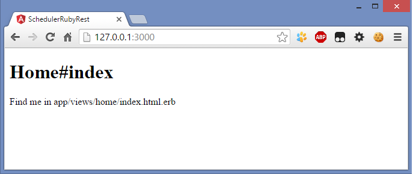
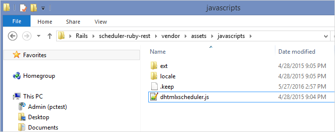
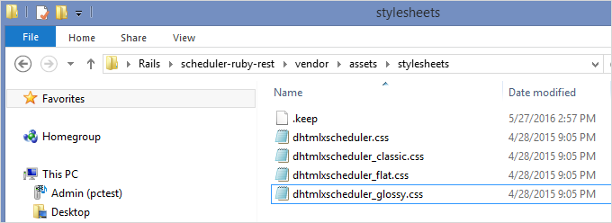
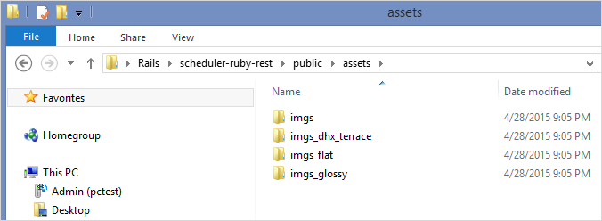
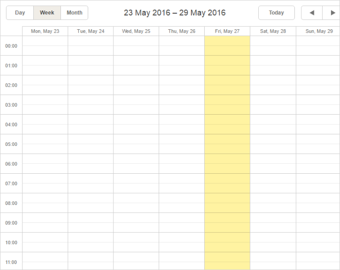
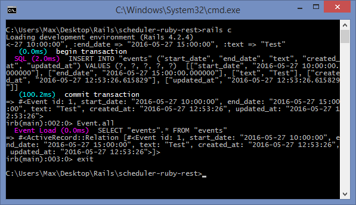
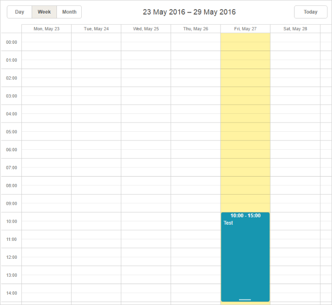

In this article we'll show you how to create a Scheduler and implement server-side integration based on Ruby on Rails framework and REST API.
If you use some other technology, check the list of available integration variants below:
If you have Ruby on Rails installed, you can begin to implement the integration at once. Otherwise, you should install the framework by following the steps described in the installation guide.
Once everything is ready, you can start completing the integration step by step.
To add a new project just run the following command in the terminal:
rails new path/to/your/project
Now you need to add a controller that will process users' request to the server through the application. Since requests differ in their type, you need to separate controllers for certain requests.
To define the connection between a controller and the type of request, routing will be used. Different routes can be served by different actions. The actions collect information which will be passed to the view.
Let's create a new controller with the name "home" and a new action called "index".
cd path/to/your/project
rails generate controller home index
The output should confirm that new files were created.
To configure the routing, open the file config/routes.rb. Find the following line at the very beginning of this file:
get 'home/index'and replace it with the following one:
root :to => 'home#index'
get "data", :to=>"event#get", :as=>"data"
post "data(/:id)", :to => "event#add"
put "data/:id", :to => "event#update"
delete "data/:id", :to => "event#delete"
After that you can test the server by running in the command line:
rails server
Open http://localhost:3000/ in your browser. The result should be like this:

So the server is ready and you can proceed with views adding.
To begin with, you should download the dhtmlxScheduler package.
Complete the next steps:
1) Unpack the file codebase/dhtmlxscheduler.js and the directories codebase/ext and codebase/locale from the package to the directory vendor/assets/javascripts/ of your project.
You should get something like following:

2) Unpack the files
from the package to the directory vendor/assets/stylesheets/ of your project.
The result should be like this:

3) In the "public" directory create the "assets" folder and unpack the following files into it:
This is what you get:

4) Open the config/initializers/assets.rb file and add dhtmlxscheduler.js and dhtmlxscheduler.css files to the precompile array. For this purpose, use the code below:
Rails.application.config.assets.precompile += %w( dhtmlxscheduler.css )
Rails.application.config.assets.precompile += %w( dhtmlxscheduler.js )
Now you are ready to create a view. Views will visualize the information gathered by actions.
If there's no controller-specific layout, Rails will use the app/views/layouts/application.html.erb file as a template for all pages that have common elements. You should add scheduler js and css files here, so add following strings to header:
<!DOCTYPE html>
<html>
<head>
<title>SchedulerRubyRest</title>
<%= stylesheet_link_tag 'application',media:'all','data-turbolinks-track'=>true %>
<%= javascript_include_tag 'application', 'data-turbolinks-track' => true %>
<%= stylesheet_link_tag 'dhtmlxscheduler',media:'all','data-turbolinks-track'=>true %>
<%= javascript_include_tag 'dhtmlxscheduler', 'data-turbolinks-track' => true %>
<%= csrf_meta_tags %>
</head>
<body>
<%= yield %>
</body>
</html>
At this point you can specify a view for the "home" controller that was created at the Step 2. For this, open the file app/views/home/index.html.erb. You need to add a container for the future scheduler and initialize the Scheduler, like this:
<div id="scheduler_here" class="dhx_cal_container" style='width:100%; height:800px;'>
<div class="dhx_cal_navline">
<div class="dhx_cal_prev_button"> </div>
<div class="dhx_cal_next_button"> </div>
<div class="dhx_cal_today_button"></div>
<div class="dhx_cal_date"></div>
<div class="dhx_cal_tab" name="day_tab" style="right:204px;"></div>
<div class="dhx_cal_tab" name="week_tab" style="right:140px;"></div>
<div class="dhx_cal_tab" name="month_tab" style="right:76px;"></div>
</div>
<div class="dhx_cal_header">
</div>
<div class="dhx_cal_data">
</div>
</div>
<script> scheduler.init("scheduler_here", new Date(2016,4,27), "week");
</script>
After that have a look at the current result. Open http://localhost:3000/ (the rails server) in a browser. You will see an empty scheduler:

Thus you've got a scheduler where you can add events and modify them. But it lacks the saving ability. To provide it, you need to proceed with creating models.
Since Scheduler operates events entities, you need to add a model for them.
To create a model for events, run the following command that contains the event's properties:
rails generate model Event start_date:datetime end_date:datetime text:string
You can find the list of mandatory properties of the Event object with their descriptions in the corresponding article of documentation.
After that create a new database:
rake db:migrateNow you can try to add an entry into it. The algorithm is the following:
1 . Open the Rails console by running:
rails c
2 . Add the desired events like this:
Event.create
:start_date => "2016-05-27 10:00:00",
:end_date => "2016-05-27 15:00:00",
:text => "Test";
3 . To display all events, run the command:
Event.all4 . Enter "exit" to close the console.

Next you need to implement data loading and saving in the scheduler with the help of controllers.
There's a common technique for loading data into Scheduler from the server side.
You will find the requirements to the client side, as well as the description of possible requests and responses in the Server-Side Integration article.
Below you will fine the info on how to load data into Scheduler using Ruby on Rails server side.
To create a new controller event, run the following command:
rails generate controller event
We will add the code that will enable data adding, changing and deleting into the file of this event - app/controllers/event_controller.rb:
class EventController < ApplicationController
protect_from_forgery
def get
events = Event.all
render :json => events.map {|event| {
:id => event.id,
:start_date => event.start_date.to_formatted_s(:db),
:end_date => event.end_date.to_formatted_s(:db),
:text => event.text
}}
end
def add
event = Event.create
:text=>params["text"],
:start_date=>params["start_date"],
:end_date=>params["end_date"]
render :json=>{:action => "inserted", :tid => event.id}
end
def update
event = Event.find(params["id"])
event.text = params["text"]
event.start_date = params["start_date"]
event.end_date = params["end_date"]
event.save
render :json=>{:action => "updated"}
end
def delete
Event.find(params["id"]).destroy
render :json=>{:action => "deleted"}
end
end
The code of Task Controller includes the following types of requests:
It will make an object with data for a Gantt chart and will contain a list of events. The dates of events should be converted into appropriate strings.
All actions return a JSON response containing the type of the performed operation or "error" if something went wrong.
Note that a response for the "insert" action also contains a database id of the new record. It will be applied on the client side, so the new item could be mapped to the database entity.
The last thing you have to do is to put the following code into the <script></script> part of the app/views/home/index.html.erb file.
scheduler.config.xml_date="%Y-%m-%d %H:%i";
scheduler.init("scheduler_here", new Date(2016,4,27), "week");
scheduler.load("<%= data_path %>/", "json");
var dp = new dataProcessor("<%= data_path %>/");
dp.init(scheduler);
dp.setTransactionMode("REST");
It initializes Scheduler and enables it to load and save data. That's all. Now you can run the application in a browser and see the result.

As you can see, an event appeared in the scheduler. You have added it at the Step 6. Now you can add more events and modify them. All the changes will be saved in the database.
For recurring events you need three additional fields:
– rec_type (stores recurring logic);
– event_pid (parent ID of a series of events);
– event_length (a real length of a series of events).
Also you should remove the old model. For this run the following line:
rails destroy model Event
Use the following command to create a new model:
rails generate model Event start_date:datetime end_date:datetime text:string
rec_type:string event_length:integer event_pid:integer
Remove the events table from the database or remove db/development.sqlite3.
After that you need to run a migration:
rake db:migrateThen open app/controllers/home_controller.rb
Here you should change "db_action" action and "data" for saving and loading of recurring events:
class HomeController < ApplicationController
def index
end
def data
events = Event.all
render :json => events.map {|event| {
:id => event.id,
:start_date => event.start_date.to_formatted_s(:db),
:end_date => event.end_date.to_formatted_s(:db),
:text => event.text,
:rec_type => event.rec_type,
:event_length => event.event_length,
:event_pid => event.event_pid
}}
end
def db_action
mode = params['!nativeeditor_status']
id = params['id']
start_date = params['start_date']
end_date = params['end_date']
text = params['text']
rec_type = params['rec_type']
event_length = params['event_length']
event_pid = params['event_pid']
tid = id
case mode
when 'inserted'
event = Event.create :start_date => start_date, :end_date => end_date,
:text => text,:rec_type => rec_type,
:event_length => event_length, :event_pid => event_pid
tid = event.id
if rec_type == 'none'
mode = 'deleted'
end
when 'deleted'
if rec_type != ''
Event.where(event_pid: id).destroy_all
end
if event_pid != 0 and event_pid != ''
event = Event.find(id)
event.rec_type = 'none'
event.save
else
Event.find(id).destroy
end
when 'updated'
if rec_type != ''
Event.where(event_pid: id).destroy_all
end
event = Event.find(id)
event.start_date = start_date
event.end_date = end_date
event.text = text
event.rec_type = rec_type
event.event_length = event_length
event.event_pid = event_pid
event.save
end
render :json => {
:type => mode,
:sid => id,
:tid => tid,
}
end
end
After that open config/initializers/assets.rb and add the dhtmlxscheduler_recurring extension to the precompile array.
For this, add the line below:
Rails.application.config.assets.precompile += %w( ext/dhtmlxscheduler_recurring.js )
Next open views/layouts/application.html.erb and include the dhtmlxscheduler_recurring.js extension.
<!DOCTYPE html>
<html>
<head>
<title>Scheduler on Rails</title>
<%= csrf_meta_tags %>
<%= stylesheet_link_tag 'application', media: 'all',
'data-turbolinks-track' => true %>
<%= stylesheet_link_tag 'dhtmlxscheduler', media: 'all',
'data-turbolinks-track' => true %>
<%= javascript_include_tag 'application', 'data-turbolinks-track' => true %>
<%= javascript_include_tag 'dhtmlxscheduler','data-turbolinks-track' => true %>
<%= javascript_include_tag 'ext/dhtmlxscheduler_recurring',
'data-turbolinks-track' => true %>
</head>
<body>
<%= yield %>
</body>
</html>
Finally, run the server once again to check scheduler with recurring events:
rails server
recurring events on rails
If you've precisely followed the given instructions, you should now have a ready-to-use scheduler with recurring events that perfectly works with Rails framework.
In case you've completed the above steps to implement Scheduler integration with Ruby on Rails, but Scheduler doesn't render events on a page, have a look at the Troubleshooting Backend Integration Issues article. It describes the ways of identifying the roots of the problems.
You can check guides on the numerous features of Scheduler or tutorials on integration of Scheduler with other backend frameworks.
Back to top